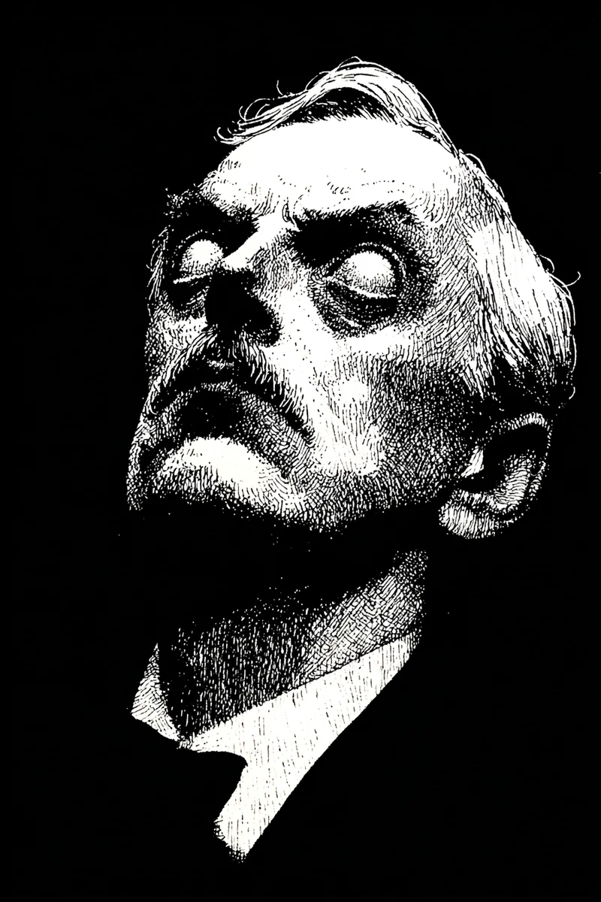

새벽 세 시, 윤재의 잠이 깨어났다.
[At three a.m., Yunjae’s sleep tore open.]
어둠 속에서 흰 눈동자가 떠올랐다.
[Out of the dark, two white pupils surfaced.]
수염 짙은 그분이 벽을 가르고 다가왔다.
[Geu-bun, thick-bearded, split the wall and drew near.]
침대 머리맡까지 소리 없이 좁혀왔다.
[Without a sound he closed in to the bedhead.]
“누구냐” 묻고 싶어도 혀끝이 굳었다.
[He wanted to ask “who are you,” but his tongue-tip stiffened.]
비명조차 목구멍 안에서 얼어붙었다.
[Even the scream froze fast inside his throat.]
매일 새벽 세 시, 그 얼굴이 가까워졌다.
[Each dawn at three, that face drew closer.]
일곱째 밤, 숨결이 목덜미에 끼얹어졌다.
[On the seventh night, breath was poured across his nape.]
윤재는 눈을 질끈 감고 기도를 삼켰다.
[Yunjae clenched his eyes shut and swallowed a prayer.]
침묵이 두꺼워지자 살며시 눈을 떴다.
[When the silence thickened, gently he opened his eyes.]
방은 텅 비고, 시계 초침만 똑딱였다.
[The room stood empty, only the clock’s second hand ticked.]
안도의 한숨이 새벽 공기에 섞였다.
[A sigh of relief mingled with the dawn air.]
손끝이 얼굴을 더듬자, 낯선 털이 만져졌다.
[As his fingertips searched his face, unfamiliar hair met them.]
동공 자리엔 오직 차가운 흰빛이 번졌다.
[Where pupils should have been, only cold white light bled through.]
이제 어둠 너머에서 누군가를 기다리는 자,
[Now the one who waits beyond the darkness,]
그분이 되어버린 윤재였다.
[was Yunjae, become Geu-bun.]